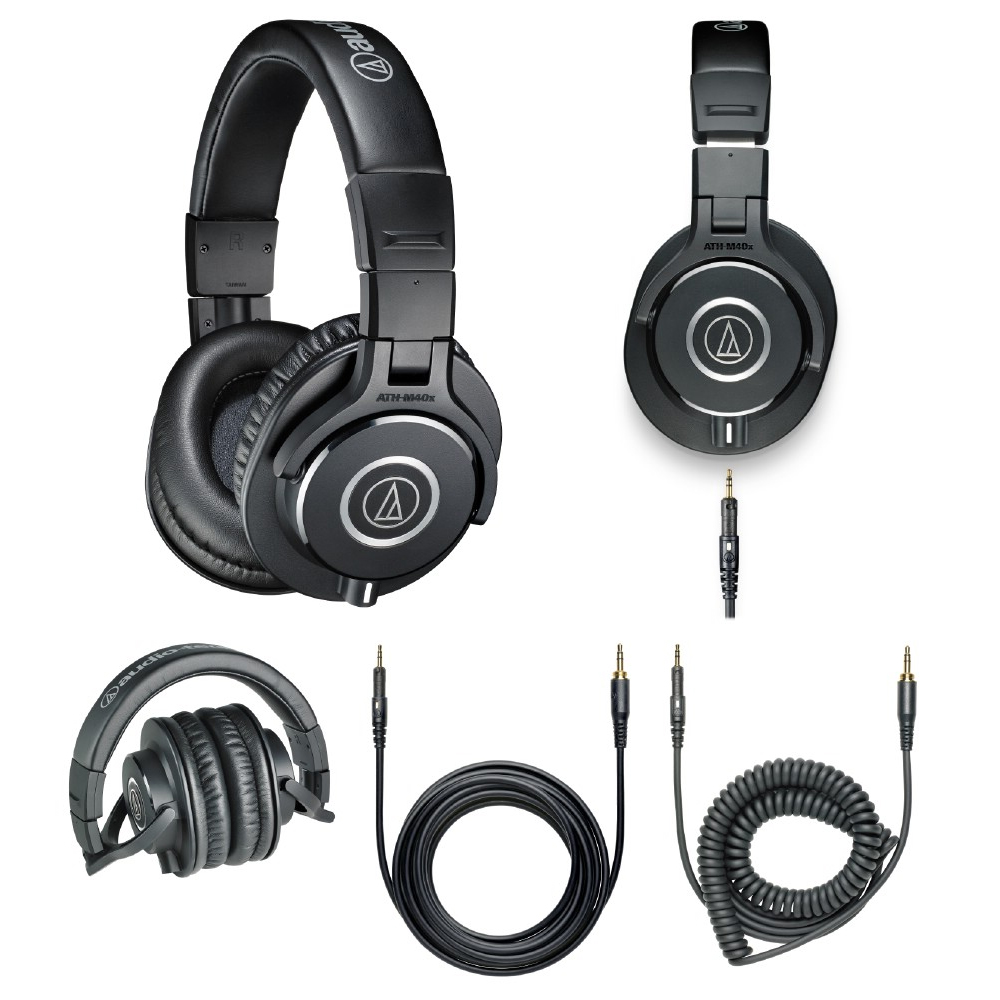
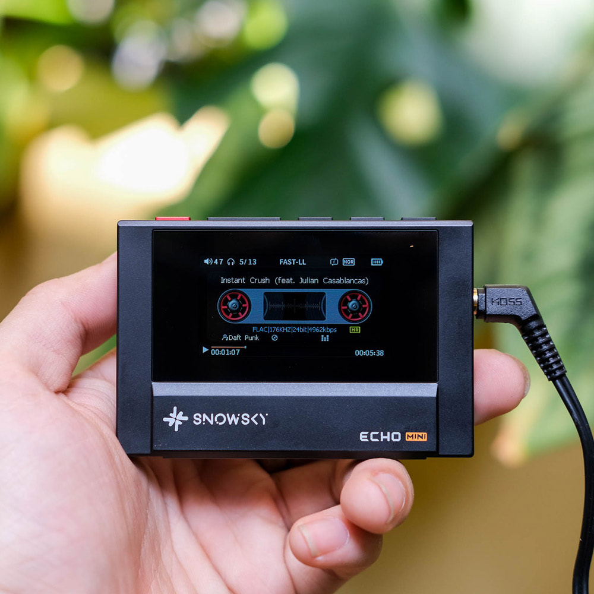
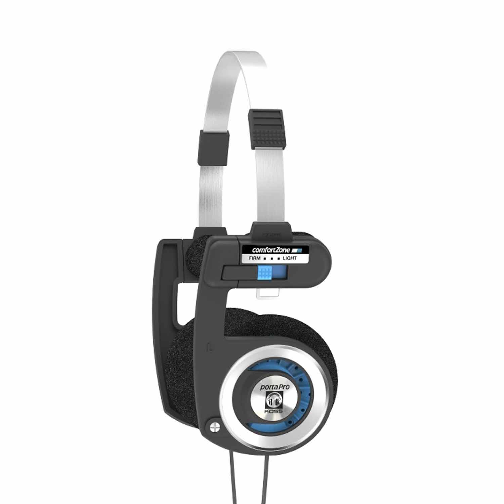

Audio-Technica ATH-M40x

Monitory zamknięte o liniowej charakterystyce.
399 PLN
Zobacz szczegóły
Z ubolewaniem stwierdzam brak produktów dla danego zapytania.

Monitory zamknięte o liniowej charakterystyce.
399 PLN
Zobacz szczegóły
Podwójny DAC plus wyjścia 3.5mm i 4.4mm w retro stylu
379 PLN

Gateway drug solidnego dźwięku od '86 w cenie kabla głośnikowego
159 PLN
Liczba kroków C: 0/5